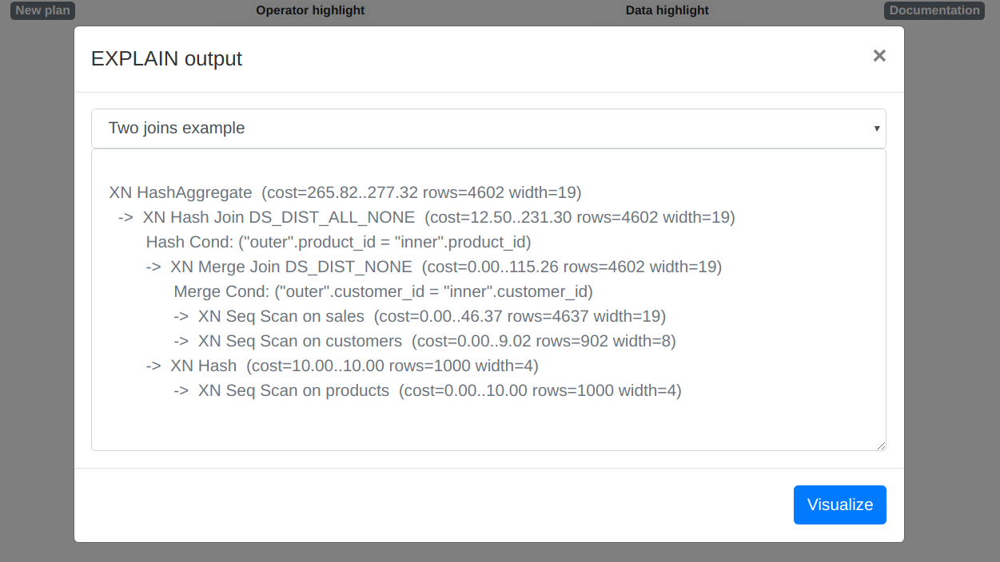

Visualize Redshift Query Plans
Add a new query plan
Paste the EXPLAIN output from your query or
choose one of the examples.
Currently supported:
- Only non-verbose
EXPLAINoutput. - Most regular Redshift operators should be supported, please create an issue for missing ones.
- Redshift Spectrum operators are not yet implemented.
Visualization

A tree display of the plan will be generated. A few different modes to highlight query operators and data flows are supported.
Operator highlight modes:
- Alerts: simple rule-based heuristics, hover the node for some more information.
- Cost: estimated cost (time based) from the planner to return the last row.
- Blocker: estimated cost (time based) from the planner to return the first row.
Data highlight modes:
- Size: estimated data size from the planner (
# Rows × Width). - Rows: estimated number of rows from the planner.
- Width: estimated size per row from the planner.